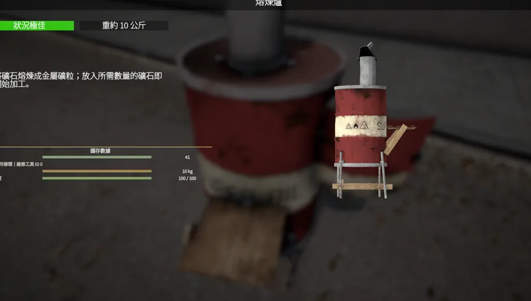
SMELTING丙烷氣瓶 丙烷連接管
熔煉爐
金屬板 ×5＋木板 ×5→熔煉爐套件
- 準備 5 塊金屬板與 5 塊木板。
- 合成「熔煉爐套件」，找合適位置放置。
- 架設後準備 丙烷氣瓶、丙烷連接管、木箱。
- 完成後即可把基礎礦石送入熔煉，取得對應礦粒。
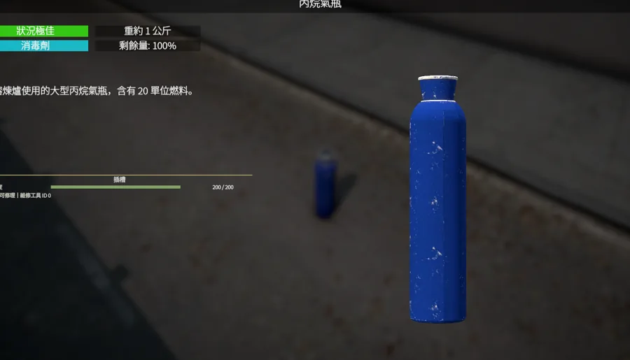
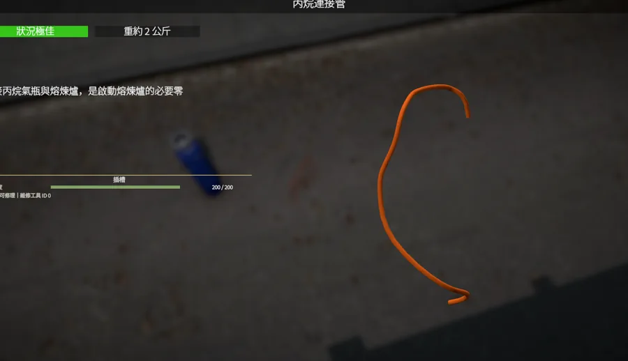
從第一把十字鎬開始，教你建立工作區、採礦、熔煉、加工寶石、融合鍛造，最後製作高階材料與裝備強化。
第一次接觸？從這裡開始你不需要先懂這個模組。照下面順序做：先準備十字鎬與三個工作站，再去採礦。挖到「礦石」走熔煉線；挖到「未加工寶石」走研磨線。
新手最容易卡在這裡：網站不會叫你「去用熔爐」卻不告訴你熔爐怎麼來。三個核心工作站先做起來。

金屬板 ×5＋木板 ×5→熔煉爐套件


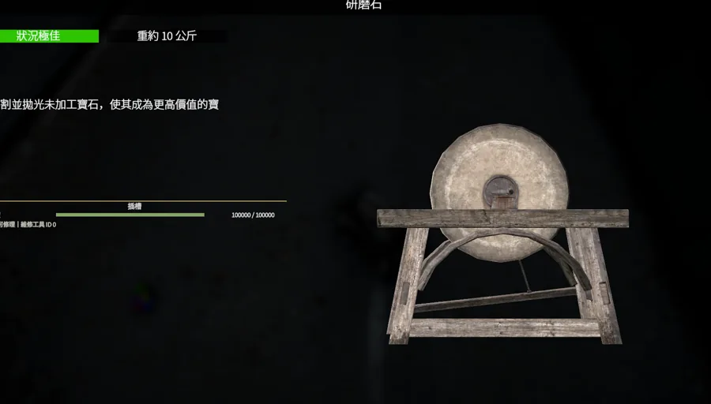
石頭 ×1＋木板 ×3→研磨石套件
它只負責寶石加工。挖到未加工寶石後帶到這裡處理，不要把寶石丟進熔煉爐。
用途：未加工寶石 → 加工後品質寶石
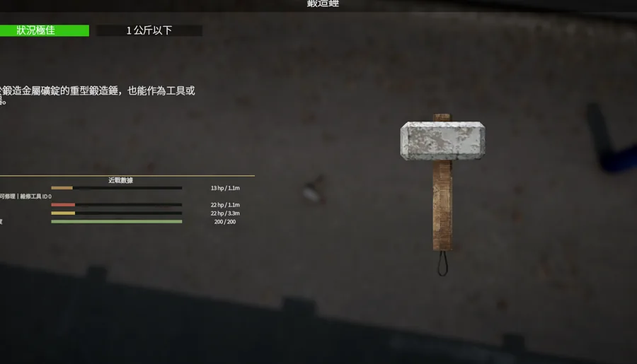
鐵礦粒 ×5＋木板 ×3→鐵砧套件
鐵砧負責把礦粒鍛造成金屬錠。基礎金屬通常需要先經過熔煉爐，取得礦粒後才來到這一步。
用途：同類礦粒 ×10 → 對應金屬錠 ×1
不同礦脈會產出不同材料。靠近可採集礦脈，手持十字鎬並依遊戲互動提示採集。
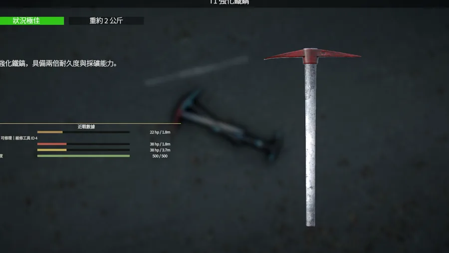
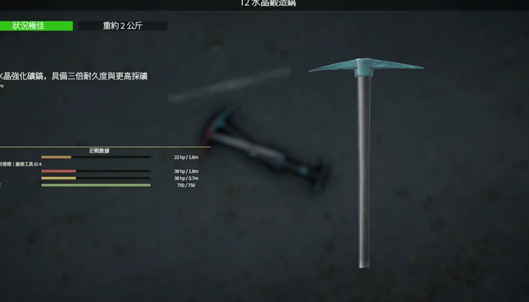
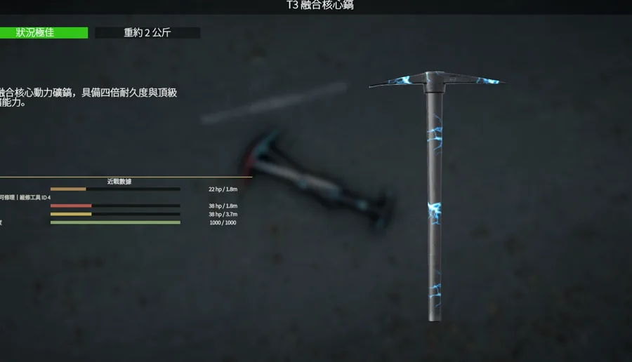
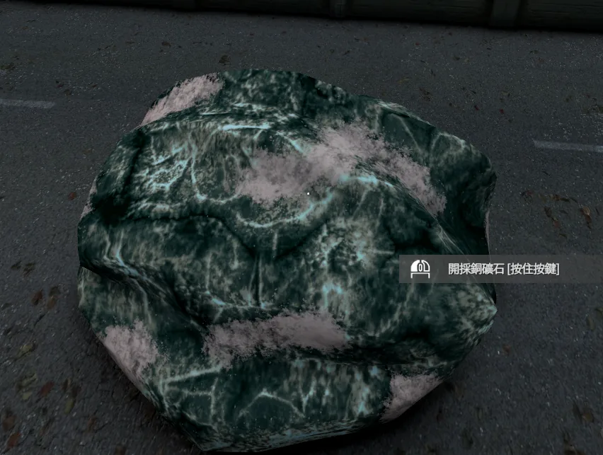
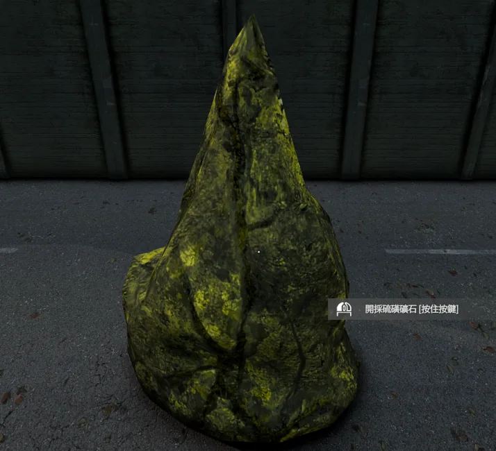
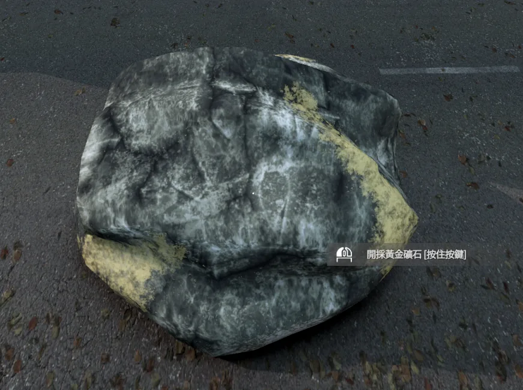
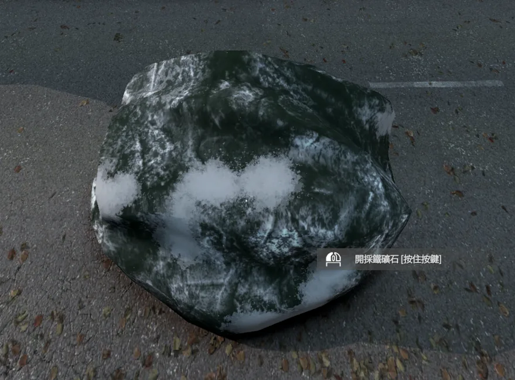
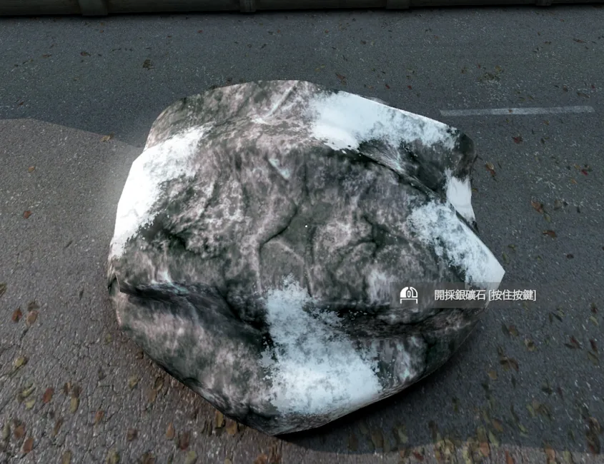
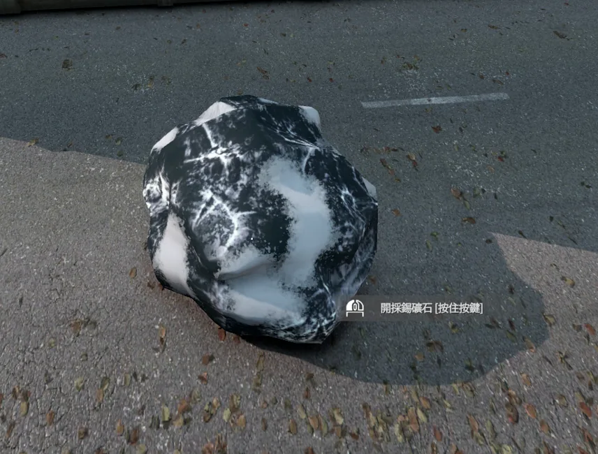
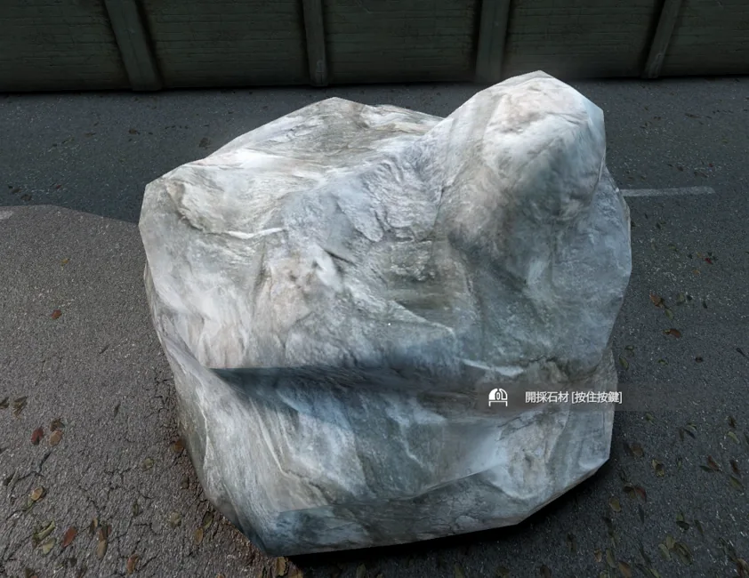
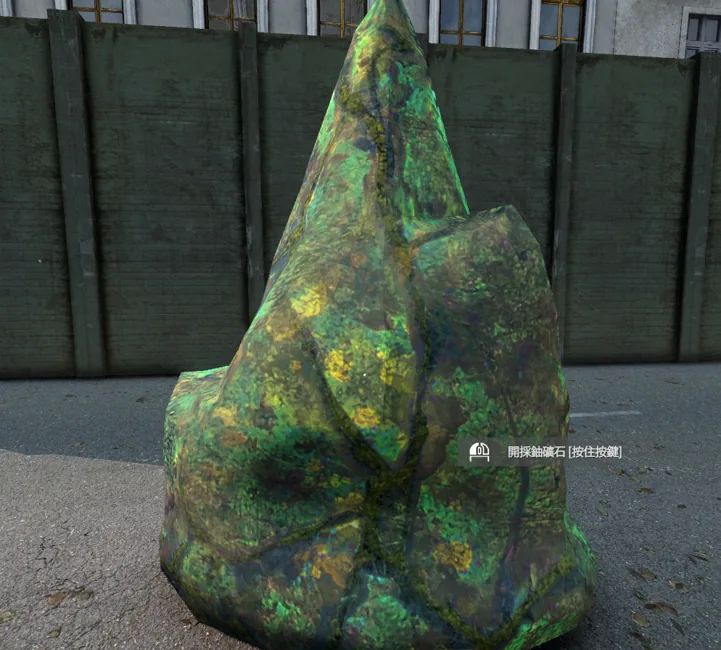
基礎金屬的處理邏輯完全相同。第一次建議直接照「鐵礦」範例做一遍。
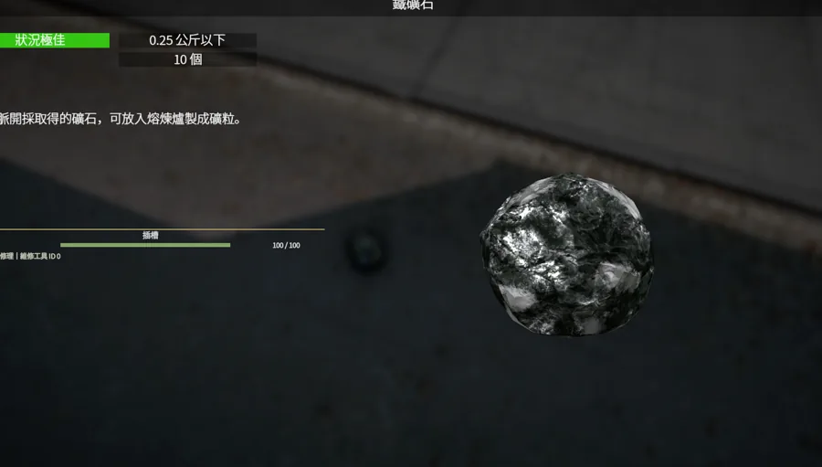
取得鐵礦石採礦後把鐵礦石帶回工作區。
熔煉鐵礦石，取得鐵礦粒。
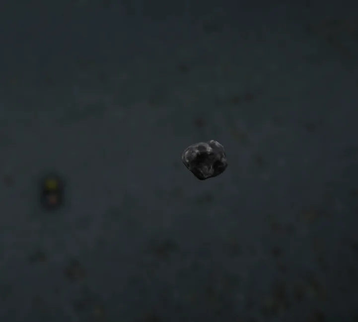
收集鐵礦粒 ×10同一種礦粒湊滿 10 顆。
10 顆鐵礦粒鍛造 1 顆鐵礦錠。
| 原料 | 加工 1 | 中間材料 | 加工 2 | 成品 |
|---|---|---|---|---|
| 銅礦石 | 熔煉爐 | 銅礦粒 ×10 | 鐵砧 | 銅礦錠 ×1 |
| 黃金礦石 | 熔煉爐 | 黃金礦粒 ×10 | 鐵砧 | 黃金礦錠 ×1 |
| 鐵礦石 | 熔煉爐 | 鐵礦粒 ×10 | 鐵砧 | 鐵礦錠 ×1 |
| 銀礦石 | 熔煉爐 | 銀礦粒 ×10 | 鐵砧 | 銀礦錠 ×1 |
| 錫礦石 | 熔煉爐 | 錫礦粒 ×10 | 鐵砧 | 錫礦錠 ×1 |
| 鈾礦石 | 熔煉爐 | 鈾礦粒 ×10 | 鐵砧 | 鈾礦錠 ×1 |
八種寶石各自對應一條融合材料線。先認得寶石，再記住品質升階規則。

對應：青銅礦錠

對應：鋼礦錠

對應：複合礦錠

對應：虛空礦錠

對應：琥珀金礦錠

對應：紅寶石礦錠

對應：稜彩礦錠

對應：水晶礦錠
這一條看懂後，其餘七種融合錠完全是相同邏輯，只是基礎金屬與對應寶石不同。
| 系列 | T1 瑕疵品質 | T2 標準品質 | T3 完美品質 |
|---|---|---|---|
| 青銅銅 + 琥珀 | 銅礦錠 ×1 + 瑕疵琥珀 ×10 | 瑕疵青銅 ×2 + 標準琥珀 ×5 | 標準青銅 ×3 + 完美琥珀 ×2 |
| 鋼鐵 + 翡翠 | 鐵礦錠 ×1 + 瑕疵翡翠 ×10 | 瑕疵鋼 ×2 + 標準翡翠 ×5 | 標準鋼 ×3 + 完美翡翠 ×2 |
| 複合鈾 + 堇青石 | 鈾礦錠 ×1 + 瑕疵堇青石 ×10 | 瑕疵複合 ×2 + 標準堇青石 ×5 | 標準複合 ×3 + 完美堇青石 ×2 |
| 虛空鐵 + 紫水晶 | 鐵礦錠 ×1 + 瑕疵紫水晶 ×10 | 瑕疵虛空 ×2 + 標準紫水晶 ×5 | 標準虛空 ×3 + 完美紫水晶 ×2 |
| 琥珀金黃金 + 海藍寶石 | 黃金礦錠 ×1 + 瑕疵海藍寶石 ×10 | 瑕疵琥珀金 ×2 + 標準海藍寶石 ×5 | 標準琥珀金 ×3 + 完美海藍寶石 ×2 |
| 紅寶石鈾 + 紅寶石 | 鈾礦錠 ×1 + 瑕疵紅寶石 ×10 | 瑕疵紅寶石礦錠 ×2 + 標準紅寶石 ×5 | 標準紅寶石礦錠 ×3 + 完美紅寶石 ×2 |
| 稜彩錫 + 綠松石 | 錫礦錠 ×1 + 瑕疵綠松石 ×10 | 瑕疵稜彩 ×2 + 標準綠松石 ×5 | 標準稜彩 ×3 + 完美綠松石 ×2 |
| 水晶銀 + 彩色鑽石 | 銀礦錠 ×1 + 瑕疵彩色鑽石 ×10 | 瑕疵水晶 ×2 + 標準彩色鑽石 ×5 | 標準水晶 ×3 + 完美彩色鑽石 ×2 |
這裡開始使用上一章做好的 T3 完美融合材料，不再從基礎礦石重新開始。
完美虛空 + 完美稜彩 → 昇華礦錠
完美琥珀金 + 完美水晶 → 天界礦錠
完美青銅 + 完美複合 → 無限礦錠
完美鋼 + 完美紅寶石 → 泰坦鍛造礦錠
天界 + 無限 → 血金屬錠
昇華 + 泰坦鍛造 → 虛空鋼錠
血金屬錠 + 虛空鋼錠
→ 核心融合礦錠附魔礦錠海藍寶石切割 ×1 + 鈾礦錠 ×10
精金礦錠堇青石切割 ×1 + 附魔礦錠 ×7
鈷礦錠綠松石切割 ×1 + 精金礦錠 ×5
克里曼特礦錠紅寶石切割 ×1 + 鈷礦錠 ×3
銥元素礦錠紫水晶切割 ×1 + 克里曼特礦錠 ×2
前面採集與合成的材料會在這裡真正派上用場。依 AshZone 強化介面顯示的需求準備材料。

已經熟悉流程時，只記這五條規則就夠。
基礎金屬礦石 → 熔煉 → 礦粒 ×10 → 鐵砧 → 金屬錠
寶石品質未加工 → 研磨；3 瑕疵 → 1 標準；3 標準 → 1 完美
T1基礎金屬錠 ×1 + 瑕疵寶石 ×10
T2瑕疵融合錠 ×2 + 標準寶石 ×5
T3標準融合錠 ×3 + 完美寶石 ×2